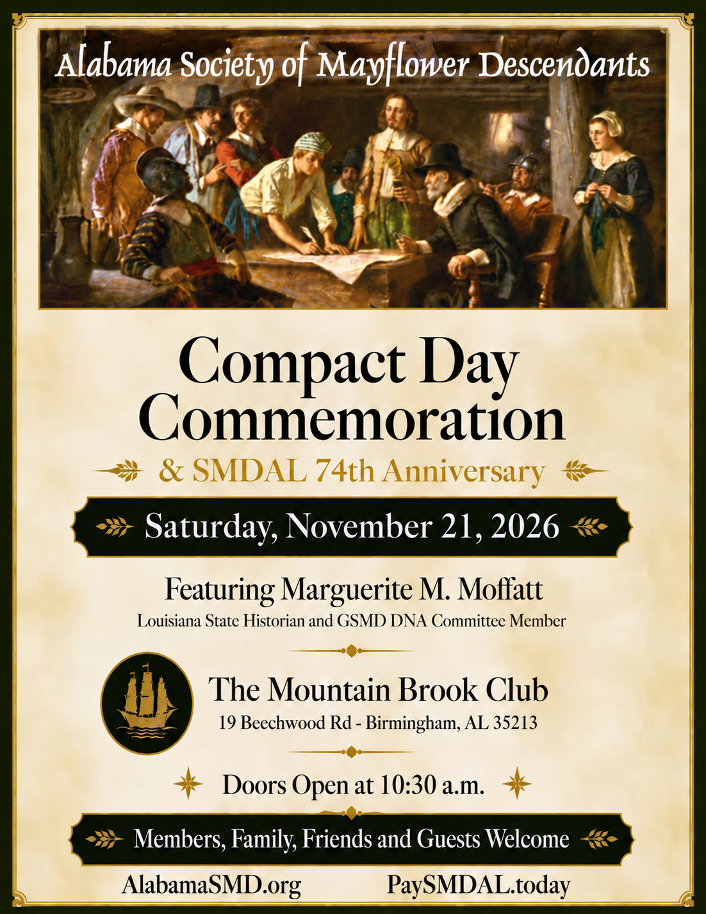
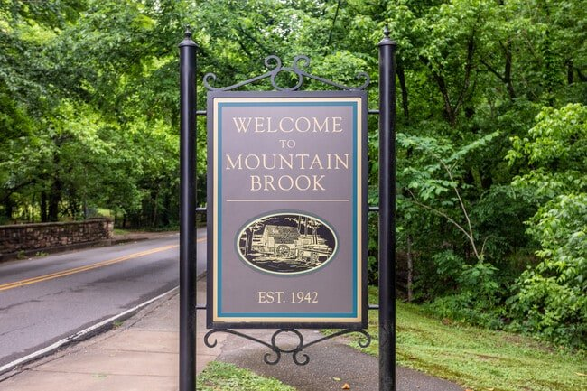
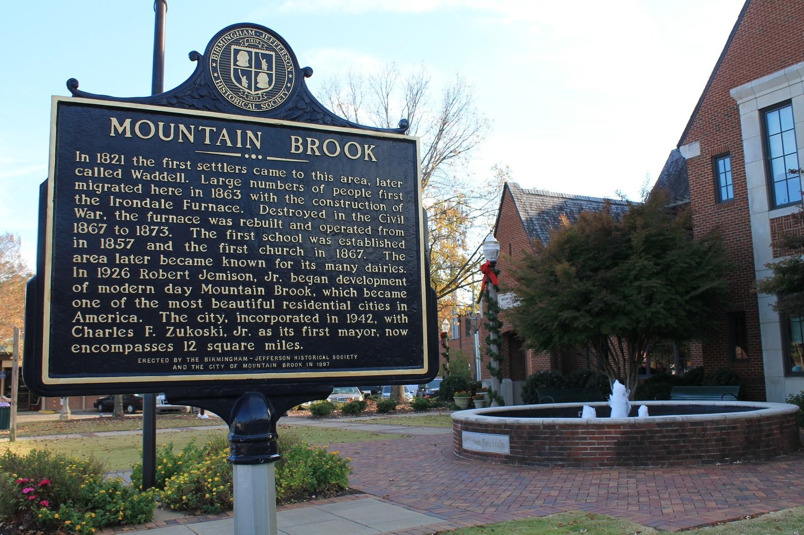
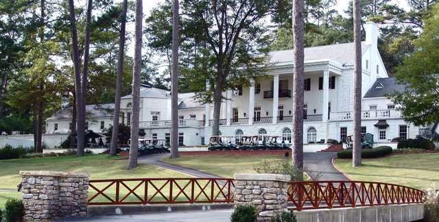
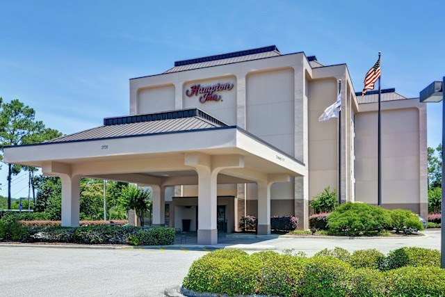

Saturday, November 21, 2026 • Mountain Brook, Alabama
Registration closes at 11:59 p.m. on Monday, November 16, 2026.
All registrations are in advance. There will be no registration at the door.
Compact Day Commemoration & SMDAL 74th Anniversary
Date: Saturday, November 21, 2026
Schedule:
Place: The Mountain Brook Club, 19 Beechwood Rd, Birmingham, AL 35213
Featuring: Marguerite M. Moffatt, Louisiana State Historian and GSMD DNA Committee Member
Members, Family, Friends and other Guests are WELCOME no matter the state in which you reside or to which State Society you belong.

Click or tap the flyer image for a full-size, downloadable PDF version.
Our Compact Day Commemoration takes place at The Mountain Brook Club. Click an image to enlarge it.



MOUNTAIN BROOK CLUB
Adult Meal
Chicken Piccata over parmesan herb risotto with haricots verts
Dessert: A plate of holiday desserts per table
Included: a glass of sparkling wine per person, rolls and corn pones, iced tea, water and coffee
Under-18 Kids Meal
Chicken fingers plus sides
Included: rolls and corn pones, iced tea, water and coffee, and desserts as above
Food issues: If any attendee has food issues, the folks at the Mountain Brook Club say they will work with them regarding their specific needs. Please send an email message to SMDAL.Info@gmail.com if you need to notify us about an attendee’s food issue. Be sure to tell us the name of the attendee.

Unofficial Host Hotel: Hampton Inn Birmingham / Mountain Brook
2731 US Highway 280 South
Birmingham, AL 35223
The Society has no special rate with this hotel. Use whatever hotel perks, points or programs are available to you to get the best rate.
Click the photo or heading for a printable PDF of this bio.
Marguerite M. Moffatt
Mayflower Society Historian • GSMD DNA Committee Member
Marguerite M. Moffatt was born in Wappingers Falls, New York, and was raised in upstate New York before making her home in Walker, Louisiana.
A nurse practitioner by training, Marguerite built her career with ExxonMobil Corporation, retiring in 2021. She served as U.S. clinical coordinator for the company’s U.S. clinics and as Business Venture Manager for a global information technology project that deployed medical software in twenty-seven countries. She was also a Data Privacy business contact, working with the corporation’s data privacy office, and a member of the corporate audit team, conducting internal audits around the world. The habits of that career, careful documentation, respect for sensitive data, and an auditor’s eye for whether the evidence supports the conclusion, now shape her genealogical work.
Marguerite descends from Mayflower passengers John Alden and Priscilla Mullins. She volunteers as a Historian for the Mayflower Society, preparing lineage applications for prospective members, and serves on the DNA Committee of the General Society of Mayflower Descendants (GSMD). Her committee work focuses on Y-DNA, particularly Big Y-700 testing, as a way to test documented lineages against genetic evidence. She has been closely involved with the Doty surname project, in which nearly one hundred descendants of Edward Doty have completed Big Y-700 tests, and with the Bonham surname project. She also develops training materials to help Historians use DNA evidence appropriately in lineage work.
With fellow DNA Committee members, Marguerite co-authored “Was John Rickard’s Wife Mary Snow the Granddaughter of Peter Brown? DNA Results Offer Additional Evidence,” published in Mayflower Descendant 73 (Summer 2025): 129–38. The article combines probate records with mitochondrial DNA results from the matrilineal descendants of Mary (Snow) Rickard and of Mayflower passenger Peter Brown’s wife to examine a long-standing but unsourced claim of Mayflower descent.
Marguerite is also a member of the Daughters of the American Revolution through her Patriot ancestor, Pierre Lamoreaux.
Registration closes at 11:59 p.m. on Monday, November 16, 2026.
All registrations are in advance. There will be no registration at the door.